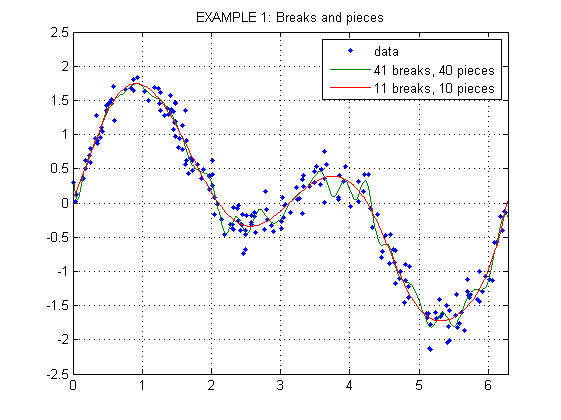
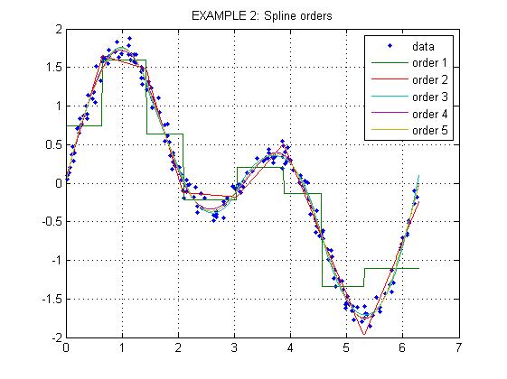
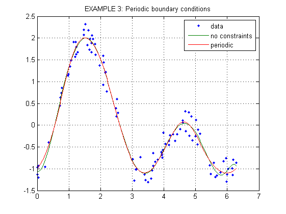
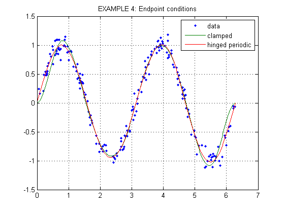
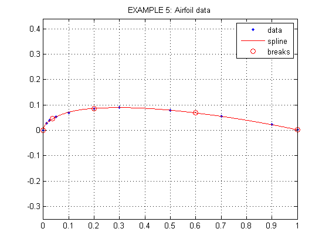
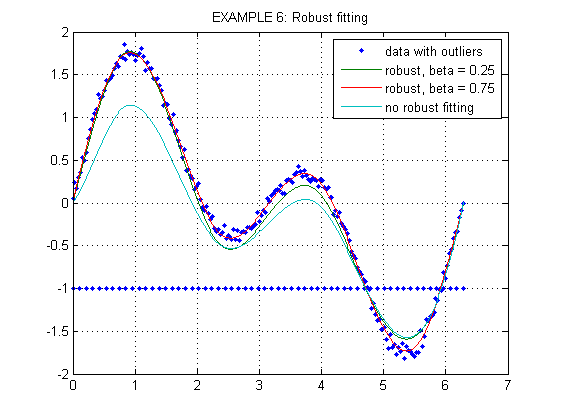

SPLINEFIT EXAMPLES
Contents
EXAMPLE 1: Breaks and pieces
x = 2*pi*rand(1,200);
y = sin(x) + sin(2*x) + 0.2*randn(size(x));
breaks = linspace(0,2*pi,41);
pp1 = splinefit(x,y,breaks);
pp2 = splinefit(x,y,10);
figure(1)
xx = linspace(0,2*pi,400);
y1 = ppval(pp1,xx);
y2 = ppval(pp2,xx);
plot(x,y,'.',xx,[y1;y2])
axis([0,2*pi,-2.5,2.5]), grid on
legend('data','41 breaks, 40 pieces','11 breaks, 10 pieces')
title('EXAMPLE 1: Breaks and pieces')

EXAMPLE 2: Spline orders
x = 2*pi*rand(1,200);
y = sin(x) + sin(2*x) + 0.1*randn(size(x));
pp1 = splinefit(x,y,8,1);
pp2 = splinefit(x,y,8,2);
pp3 = splinefit(x,y,8,3);
pp4 = splinefit(x,y,8,4);
pp5 = splinefit(x,y,8,5);
figure(2)
xx = linspace(0,2*pi,400);
y1 = ppval(pp1,xx);
y2 = ppval(pp2,xx);
y3 = ppval(pp3,xx);
y4 = ppval(pp4,xx);
y5 = ppval(pp5,xx);
plot(x,y,'.',xx,[y1;y2;y3;y4;y5]), grid on
legend('data','order 1','order 2','order 3','order 4','order 5')
title('EXAMPLE 2: Spline orders')

EXAMPLE 3: Periodic boundary conditions
x = 2*pi*[0,rand(1,98),1];
y = sin(x) - cos(2*x) + 0.2*randn(size(x));
pp1 = splinefit(x,y,10,5);
pp2 = splinefit(x,y,10,5,'p');
figure(3)
xx = linspace(0,2*pi,400);
y1 = ppval(pp1,xx);
y2 = ppval(pp2,xx);
plot(x,y,'.',xx,[y1;y2]), grid on
legend('data','no constraints','periodic')
title('EXAMPLE 3: Periodic boundary conditions')
y0 = ppval(pp2,[0,2*pi]);
y1 = ppval(ppdiff(pp2,1),[0,2*pi]);
y2 = ppval(ppdiff(pp2,2),[0,2*pi]);
y3 = ppval(ppdiff(pp2,3),[0,2*pi]);
disp('Endpoint derivatives:')
disp([y0;y1;y2;y3])
Endpoint derivatives:
-0.9885 -0.9885
0.7848 0.7848
3.2802 3.2802
5.6253 5.6253

EXAMPLE 4: Endpoint conditions
x = 2*pi*rand(1,200);
y = sin(2*x) + 0.1*randn(size(x));
breaks = linspace(0,2*pi,10);
xc = [0,0,2*pi,2*pi];
cc = [eye(2),eye(2)];
con = struct('xc',xc,'cc',cc);
pp1 = splinefit(x,y,breaks,con);
con = struct('xc',0);
pp2 = splinefit(x,y,breaks,con,'p');
figure(4)
xx = linspace(0,2*pi,400);
y1 = ppval(pp1,xx);
y2 = ppval(pp2,xx);
plot(x,y,'.',xx,[y1;y2]), grid on
legend('data','clamped','hinged periodic')
title('EXAMPLE 4: Endpoint conditions')

EXAMPLE 5: Airfoil data
x = [0,1,2,4,8,16,24,40,56,72,80]/80;
y = [0,28,39,53,70,86,90,79,55,22,2]/1000;
xy = [x;y];
ds = sqrt(diff(x).^2 + diff(y).^2);
s = [0, cumsum(ds)];
con = struct('xc',[0 0],'yc',[0 0; 0 1],'cc',eye(2));
pp = splinefit(s,xy,4,con);
figure(5)
ss = linspace(0,s(end),400);
xyfit = ppval(pp,ss);
xyb = ppval(pp,pp.breaks);
plot(x,y,'.',xyfit(1,:),xyfit(2,:),'r',xyb(1,:),xyb(2,:),'ro')
legend('data','spline','breaks')
grid on, axis equal
title('EXAMPLE 5: Airfoil data')

EXAMPLE 6: Robust fitting
x = linspace(0,2*pi,200);
y = sin(x) + sin(2*x) + 0.05*randn(size(x));
x = [x, linspace(0,2*pi,60)];
y = [y, -ones(1,60)];
con = struct('xc',[0,2*pi]);
pp1 = splinefit(x,y,8,con,0.25);
pp2 = splinefit(x,y,8,con,0.75);
pp3 = splinefit(x,y,8,con);
figure(6)
xx = linspace(0,2*pi,400);
y1 = ppval(pp1,xx);
y2 = ppval(pp2,xx);
y3 = ppval(pp3,xx);
plot(x,y,'.',xx,[y1;y2;y3]), grid on
legend('data with outliers','robust, beta = 0.25','robust, beta = 0.75',...
'no robust fitting')
title('EXAMPLE 6: Robust fitting')
